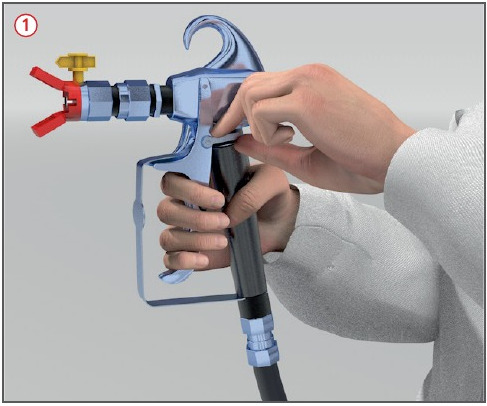

Gefährdungen
- Durch unsachgemäße Ver -
wendung können durch den
Farbstrahl schwere Verletzungen
und Infektionen auftreten.
- Haut kontakt und Einatmen von
Beschichtungsstoffen können
schwere gesundheitliche
Schäden hervorrufen.
Allgemeines
- Das Spritzgerät steht so lange
unter Druck, bis der elektrische
Antrieb bei elektrisch betriebenen Anlagen abgeschaltet
und der Druck durch Öffnen der
Pistole abgebaut wird.
Schutzmaßnahmen
- Pistole nicht auf Personen richten.
- Hand und Finger nicht vor die Düse halten.
- Bei Arbeitsunterbrechungen
Abzugshahn der Pistole mit
Sicherungshebel feststellen
 .
.
- Darauf achten, dass alle Zubehörteile für den Maximaldruck zugelassen sind.
- Angaben der Hersteller beachten hinsichtlich:
- maximaler Schlauchlänge,
- minimalen Abstandes zwischen Gerät und Pistole,
- Flammpunkt der zu verarbeitenden Materialien.
- Vor Inbetriebnahme des Gerätes sämtliche Schlauchverbindungen nachziehen, die sich
eventuell beim Transport gelöst haben können.
- Schläuche nur vom Fachpersonal einbinden lassen.
- Bei Reinigungs- und Wartungsarbeiten
sowie bei Düsenwechsel Druckabbau vornehmen und unter Beachtung folgender Maßnahmen
durchführen:
- Pistolenabzug sichern,
- Betriebsschalter auf AUS schalten,
- Stecker herausziehen,
- Pistolenabzug entsichern und
Pistole in Metallbehälter entleeren.
Wichtig: Metallkontakt
zwischen Pistole und Behälter
herstellen,
- Pistolenabzug sichern,
- Druckentlastungshahn öffnen, Material ablassen,
- Druckentlastungshahn geöffnet
lassen bis zum nächsten
Arbeitsvorgang.
- Beim Verarbeiten wasserverdünnbarer
Beschichtungsstoffe,
deren Aerosole gesundheitsschädlich
sind, Atemschutz mit
Partikel filter P2 oder filtrierende
Halbmasken FF P2 benutzen.
- Beim Entstehen giftiger Aerosole
Atemschutz mit Partikelfilter P3 oder filtrierende Halbmasken
FF P3 benutzen.
- Werden lösemittelverdünnbare Beschichtungsstoffe verarbeitet,
Atemschutz mit Gasfilter A2 benutzen.
- In Einzelfällen können auch Kombinationsfilter verwendet werden.
Arbeitsmedizinische Vorsorge
- Arbeitsmedizinische Vorsorge
nach Ergebnis der Gefährdungsbeurteilung
veranlassen (Pflichtvorsorge)
oder anbieten (Angebotsvorsorge).
Hierzu Beratung
durch den Betriebsarzt.
07/2015